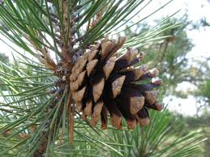
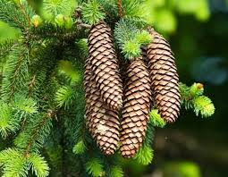
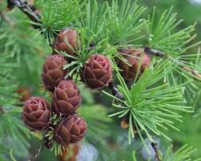
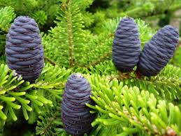
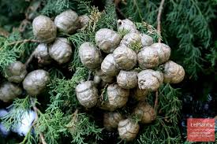

5 видов шишек

Сосна обыкновенная
Твёрдые шишки 3–7 см.
Сосновые шишки раскрываются в сухую погоду и закрываются перед дождём.

Ель европейская
Длинные шишки до 15 см.
Еловые шишки являются главной пищей для птиц клестов.

Лиственница
Маленькие шишки 2–4 см.
Лиственница — единственное хвойное дерево, которое сбрасывает хвою на зиму.

Пихта сибирская
Шишки стоят свечкой до 10 см.
Пихтовые шишки распадаются прямо на дереве, оставляя только стержень.

Кипарис
Шаровидные шишки 2–3 см.
Кипарисовые шишки могут висеть на дереве много лет и не раскрываться.